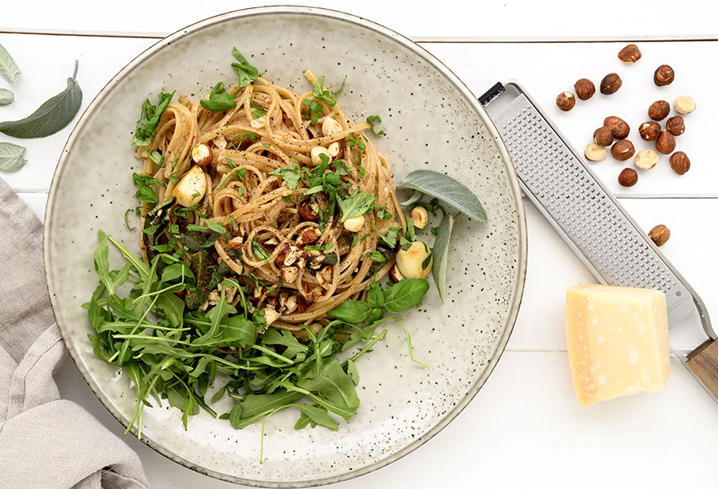
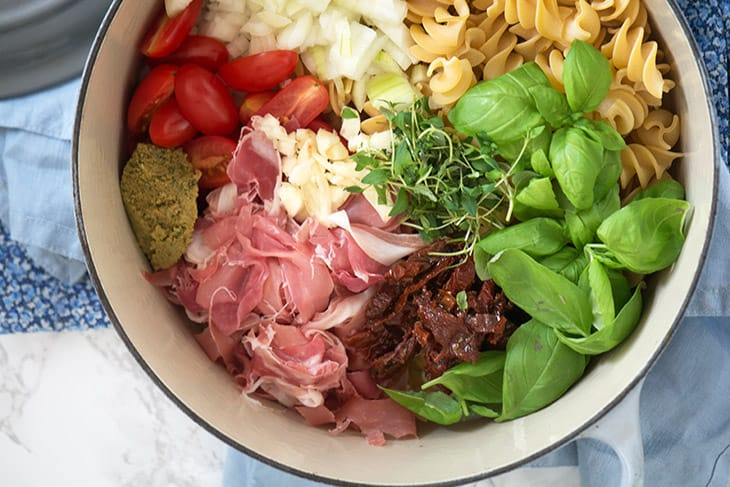
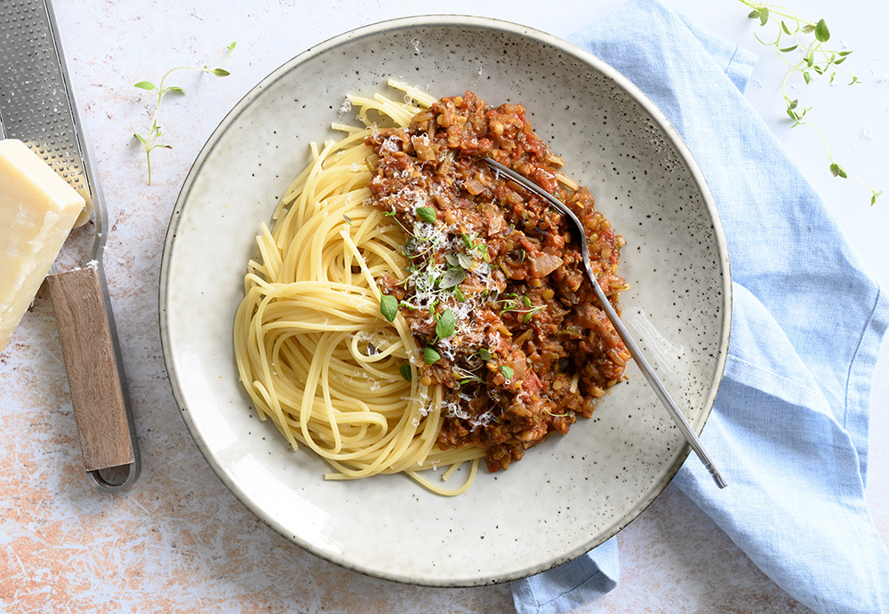

Pasta med hasselnødder og salvie

4 pers.
Ingredienser
- 350 g pasta
- 75 g hasselnødder, finthakkede
- 75 g parmesan, friskrevet
- 5 frisk salvie, blade
- 3 fed hvidløg, finthakket
- 1 håndfuld frisk basilikum, finthakket
- flagesalt
- sort peber, friskkværnet
- 1 spsk smør
Tid: 15 minutter
Fremgangsmåde
Kog pastaen lige knap al dente i en gryde med letsaltet vand og tilbered imens resten af retten.
Rist hasselnødderne på en tør pande til skallerne sprækker en smule, kom dem i et rent klæde og gnid skallerne af, hvorefter nødderne hakket fint.
Smelt smør på panden, sammen med salvie og hvidløg ved mellem-lav varme. Lad det stå og dufte lidt til pastaen er næsten klar.
Kom en dl pastavand på panden. Hæld resten af vandet fra pastaen og kom også pastaen og den friske parmesan på panden. Vend det godt sammen med de hakkede hasselnødder. Kværn frisk sort peber over og drys med lidt flagesalt.
Server med grøn salat og et drys finthakket basilikum.
One Pot Pastaskruer med seranoskinke og soltørrede tomater

4 pers.
Ingredienser
- 350 pastaskruer
- 90 g serranoskinke, i skiver
- 2 løg, finthakket
- 4 fed hvidløg
- 2 spsk soltørrede tomater, finthakket
- 10 cherrytomater, i kvarte
- 20 frisk basilikum, blade
- 1 tsk timian, tørret
- 1 tsk oregano, tørret
- 6 dl grøntsagsbouillon
- 1 dl piskefløde
- 1 spsk smør
- sort peber, friskkværnet
Derudover
- 125 g rucola
- krydderurter
Tid: 25 minutter
Fremgangsmåde
Kom alle ingredienserne i en stor gryde.
Kog op, rør rundt og skru derefter ned for varmen, inden der sættes låg på gryden og lad den lækre pastaret simre ved middel varme til pastaen er perfekt mør og al dente.
Server med friske krydderurter og ruccola.
Vegetar Bolognese

4 pers.
Ingredienser
- 1 løg, finthakket
- 2 fed hvidløg, finthakket
- 250 g champignon, finthakket
- 1 tsk timian, tørret
- 1 tsk røget paprika
- 1 squash, groftrevet
- 3 stængler bladselleri
- 75 g soltørrede tomater
- 1 dåse hakkede tomater
- 2 spsk rød balsamico
- 50 g røde linser
- 1 dl rødvin, eller grøntsagsboullion
- 1 spsk frisk rosmarin, finthakket
- salt
- sort peber, friskkværnet
- olie til stegning
Tid: 30 minutter
Fremgangsmåde
Sauter løg og hvidløg i olie til de er klare og bløde. Tilsæt finthakkede champignon og sauter under omrøring og høj varme.
Tilsæt derefter alle de andre ingredienser. Sæt låg på, skrue ned for varmen og lad retten simre sagte i 15 minutter, hvorefter den smages til og simre i yderligere 10 minutter mens pastaen tilberedes.